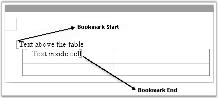
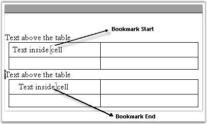
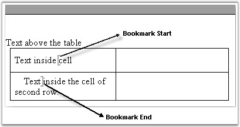
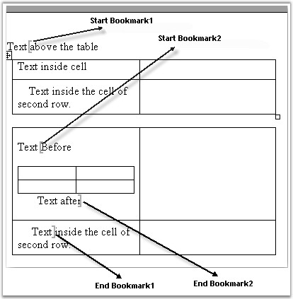

BookmarkNavigator is used for navigation between bookmarks in the Word document.
· You can navigate to a bookmark by using the MoveToBookmark method. There are two overloads for this method.
o MoveToBookmark(string bookmarkName, bool isStart, bool isAfter), which moves to the bookmark with the specified name
o The isStart parameter defines whether to move to the bookmark start or bookmark end and the isAfter parameter defines whether to set virtual "cursor" after or before the bookmark start or end.
o MoveToBookmark(string bookmarkName), which moves to the bookmark start with the specified name, and sets the "cursor" before the bookmark start.
· You can insert text between bookmark start and bookmark end by using the InsertText method.
· You can insert a table between the bookmark start and bookmark end by using the InsertTable method.
· You can insert a paragraph between the bookmark start and bookmark end by using the InsertParagraph method.
· You can insert the text body part between the bookmark start and bookmark end by using the InsertTextBodyPart method.
· You can insert paragraph items between the bookmark start and bookmark end by using the InsertParagraphItem method.
· You can delete content between the bookmark start and bookmark end by using the DeleteBookmarkContent method.
· You can replace content between the bookmark start and bookmark end by using the ReplaceBookmarkContent method.
· You can get the content between the bookmark start and bookmark end by using the GetBookmarkContent method.
The following are the restrictions on the GetBookmarkContent method.
Case 1: The bookmark start is positioned in the text and bookmark end is positioned inside the table or vice versa.

Figure 58: GetBookmarkContent method - Restriction 1
Case 2: The bookmark start and bookmark end are positioned inside different tables.

Figure 59: GetBookmarkContent method - Restriction 2
Case 3: The bookmark start and bookmark end are positioned inside different cells.

Figure 60: GetBookmarkContent method - Restriction 3
The following exception is raised by the GetBookmarkContent method for all the preceding cases: "Bookmark Start and Bookmark End located inside different contents".

Figure 61: GetBookmarkContent method - Restriction 4
 Note: GetBookmarkContent method works fine for
tables, if they are located between the bookmark start and bookmark
end.
Note: GetBookmarkContent method works fine for
tables, if they are located between the bookmark start and bookmark
end.
Public Constructor
|
Name |
Description |
|
BookmarkNavigator.BookmarkNavigator (IWordDocument) |
Initializes a new instance of the BookmarkNavigator class. |
Public Properties
|
Name |
Description |
|
CurrentBookmark |
Gets the current bookmark. |
|
Document |
Gets or sets Document that this object is attached to. |
Public Methods
|
Name |
Description |
|
DeleteBookmarkContent |
Deletes the bookmark content. |
|
GetBookmarkContent |
Gets the bookmark content2. |
|
InsertParagraphItem |
Inserts the paragraph item to current position. |
|
InsertTable |
Inserts the table. |
|
InsertText |
Inserts the text. |
|
MoveToBookmark |
Moves to bookmark. |
|
ReplaceBookmarkContent |
Replaces bookmark content. |
|
InsertParagraph |
Inserts the paragraph. |
|
InsertTextBodyPart |
Inserts the body part of the text. |
The following example illustrates how to use the BookmarkNavigator class.
|
[C#]
IWordDocument doc = new WordDocument( Path + "BookmarkNavigator.doc" );
BookmarksNavigator bn = new BookmarksNavigator( doc ); bn.MoveToBookmark( "bm_bodypart" ); TextBodyPart part = bn.GetBookmarkContent(); bn.MoveToBookmark( "bm_empty" ); bn.ReplaceBookmarkContent( part ); TextSelection sel =(doc as WordDocument).Find( "11" , false, false ); |
|
[VB.NET]
Dim doc As IWordDocument = New WordDocument(Path & "BookmarkNavigator.doc")
Dim bn As BookmarksNavigator = New BookmarksNavigator(doc) bn.MoveToBookmark("bm_bodypart") Dim part As TextBodyPart = bn.GetBookmarkContent() bn.MoveToBookmark("bm_empty") bn.ReplaceBookmarkContent(part) Dim sel As TextSelection = (CType(IIf(TypeOf doc Is WordDocument, doc, Nothing), WordDocument)).Find("11", False, False) |
You can also preserve the formatting in the template (target) document while inserting or replacing the bookmark with a string, by deleting the content of the bookmark without deleting its format. The following code illustrates this.
|
[C#]
// Move to the Essential_DocIO bookmark. bk.MoveToBookmark("Essential_DocIO");
// Delete bookmark content without deleting the format in the target document. bk.DeleteBookmarkContent(false);
// Insert Text bk.InsertText("Essential XlsIO is a Non UI component that can be used in both ASP.NET and windows forms applications. The usage is common for both environments except for the part where the created spreadsheet is saved to disk or stream in the case of a windows forms application and streamed to the client browser in the case of asp.net applications."); |
|
[VB.NET]
' Move to the Essential_DocIO bookmark. bk.MoveToBookmark("Essential_DocIO")
' Delete bookmark content without deleting the format in the target document. bk.DeleteBookmarkContent(false)
' Insert text. bk.InsertText("Essential XlsIO is a Non UI component that can be used in both ASP.NET and windows forms applications. The usage is common for both environments except for the part where the created spreadsheet is saved to disk or stream in the case of a windows forms application and streamed to the client browser in the case of asp.net applications.") |